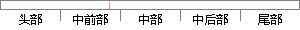

不同的是它把输入的实值压缩到了-1~1的范围，因此它基本上是0均值的，也就解决了上述Sigmoid函数中的第二个缺点，所以实际中会比Sigmoid函数更常用。
片段位置图

相似结果|
1
原句片段：函数中的第二个缺点，所以实际中会比Sigmoid函数更常用。
相似片段 1：2、tanh函数 ??tanh和sigmoid函数是有异曲同工之妙的,不同的是它把实...的,这也就解决了上述sigmoid缺点中的第二个,所以实际中tanh会比sigmoid更常用。...
相似片段 2：函数max(0,~)是一个非线性函数,对矩阵中小于0的元素置零而保留大于0的元素...均值的,也就解决了上述Sigmoid缺点中的第二个,所以实际中tanh会比sigmoid更常用...
相似片段 3：之前我们说过,sigmoid函数输入一个实值的数,然后将其压缩到0~1的范围内。特别...均值的,也就解决了上述Sigmoid缺点中的第二个,所以实际中tanh会比sigmoid更常用...
2
原句片段：不同的是它把输入的实值压缩到了-1~1的范围，因此它基本上是0均值的，也就解决了上述Sigmoid
相似片段 1：Tanh.?Tanh和Sigmoid是有异曲同工之妙的,它的图形如上图右所示,不同的是它把实值得输入压缩到-1~1的范围,因此它基本是0均值的,也就解决了上述Sigmoid缺点...
相似片段 2：2.Tanh. Tanh 和Sigmoid 是有异曲同工之妙的,它的图形如上图右所示,不同的是它把实值 得输入压缩到-1~1 的范围,因此它基本是0 均值的,也就解决了上述...
相似片段 3：不同的是它把实值得输入压缩到-1~1 的范围,因此它基本是 0 均值的,也就解决了上述 Sigmoid 缺点中的第二个(捆绑效果,收敛慢),所以实际中 tanh...
相似片段 4：2.Tanh.?Tanh和Sigmoid是有异曲同工之妙的,它的图形如上图右所示,不同的是它把实值得输入压缩到-1~1的范围,因此它基本是0均值的,也就解决了上述Sigmoid缺点...
相似片段 5：之前我们说过,sigmoid函数输入一个实值的数,然后将其压缩到0~1的范围内。特别...不同的是它把实值得输入压缩到-1~1的范围,因此它基本是0均值的,也就解决了...
相似片段 6：之前我们说过,sigmoid函数输入一个实值的数,然后将其压缩到0~1的范围内。特别...不同的是它把实值得输入压缩到-1~1的范围,因此它基本是0均值的,也就解决了...
相似片段 7：之前我们说过,sigmoid函数输入一个实值的数,然后将其压缩到0~1的范围内。特别...不同的是它把实值得输入压缩到-1~1的范围,因此它基本是0均值的,也就解决了...
相似片段 8：因为它接收一个实值的信号(即上面所说的加和的值)然后将它压缩到0-1的范围...不同的是它把实值得输入压缩到-1~1的范围,因此它基本是0均值的,也就解决了...
|
※ 片段修改建议 ※
近似词参考：- 不同：分歧 差别
- 压缩：紧缩
- 范围：规模 局限 范畴
- 因此：是以 因而
- 解决：办理
- 缺点：错误谬误 弱点 瑕玷 缺陷
- 所以：以是
- 实际：现实
- 常用：经常使用
系统自动生成语句：分歧的是它把输入的实值紧缩到了-1~1的规模，是以它基本上是0均值的，也就办理了上述Sigmoid函数中的第二个错误谬误，以是现实中会比Sigmoid函数更经常使用。
注：本片段修改建议为系统自动生成，仅供参考。